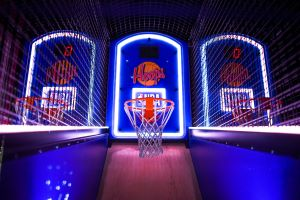

Places to game while you are in Berlin!
Since you're an avid gamer, you're sure to be craving that fix. Be it e-sports titles, arcade games or retro games, we've got you covered!
Computerspielemuseum
Take some time to check out the Computer Games Museum. Founded in 1997 and re-opened in 2011, this is the perfect place to check out the history of video games. From Retro consoles to current generation gaming platforms!
To visit their website Click here
OffWorld Gaming Berlin
You should also take the time to visit OffWorld Gaming if you need that gaming fix while you're away from home. They have a range of current generation consoles and high-dn gaming PCs available for visitors and also offer a range of drinks and snacks!
To visit their website Click here

Gamestate Arcade
If you're looking for a more relaxed arcade type setting, head on over to Gamestate Berlin. Located in Potsdamer Platz and surrounded by many great places to eat, this is the perfect place to enjoy a few casual hours of gaming.
To visit their website Click here
XPERION
If you find yourself in Alexanderplatz, you should also take the time to check out XPERION. Located inside a tech store called Saturn, this gaming lounge is filled with the newest and best gaming equipment for you to test and purchase!
To visit their website Click here